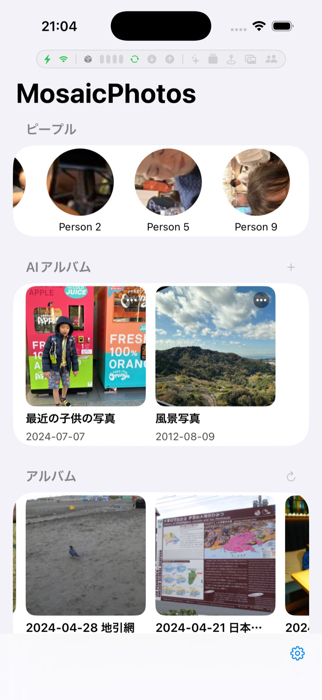

フォルダアルバムの作り方
Dropbox の「フォルダ名」から自動でアルバムを作る機能です。たとえば
/Trips/ハワイ 2024/ の中の写真を「ハワイ 2024」というアルバムにできます。
設定は 設定 → Albums & Search → Folder Albums で行います。

仕組み（まずはこれだけ）
1 つの「ルール」は、次の 2 つを決めるだけです。
- パターン … どのフォルダを対象にするか（＝「探し方」）。
- テンプレート … アルバム名をどう作るか（＝「名前の作り方」）。既定は
${name}。
パターンの中で、アルバム名にしたい部分を (?<name>…) で囲って“印”を付けます。
その印で囲んだ文字が、テンプレートの ${name} に入ります。これが基本のすべてです。
/Trips/ハワイ 2024/IMG_1.jpg^/Trips/(?<name>[^/]+)/${name}部品の早見表（コピペで使えます）
正規表現の“部品”の意味です。難しく見えますが、使うのは数個だけです。
| 書き方 | 意味 |
|---|---|
^ | パスの先頭（必ず / から始まります） |
$ | パスの末尾 |
/ | フォルダの区切り |
[^/]+ | フォルダ 1 階層ぶん（「/」以外の文字が 1 つ以上）。いちばん使います |
\d / \d{4} / \d{2} | 数字 1 文字 / ちょうど 4 文字（年など）/ ちょうど 2 文字（月など） |
\s | 空白 1 文字 |
(?<name>…) | アルバム名にする部分の印（中身が ${name} に入る） |
( … ) | 番号付きで取り出す（$1, $2… で使う） |
(?: … ) | 「まとめる」だけ（取り出さない）。次の ? と組で“省略可能”に |
? / * / + | 直前が「0〜1 個」/「0 個以上」/「1 個以上」 |
. | 任意の 1 文字 |
| | 「または」（(?:A|B) で A か B） |
\. | 文字としての「.」（特殊文字を“ただの文字”にするには前に \） |
テンプレート側で使える記号:
| 書き方 | 意味 |
|---|---|
${name} | (?<name>…) で取り出した文字 |
$1 $2 | 1 番目・2 番目の ( ) で取り出した文字 |
$$ | 文字としての「$」 |
例をたくさん
あなたの Dropbox の構成に近いものを探して、そのままコピーして使ってください （フォルダ名は日本語でも英語でも構いません）。
1. 特定フォルダの直下を、そのままアルバム名に
/Trips/京都旅行/IMG_1.jpg^/Trips/(?<name>[^/]+)/${name}2. 日本語フォルダでも同じ
/写真/沖縄/x.jpg^/写真/(?<name>[^/]+)/3. アンダースコアは自動で空白になります
/写真/2024_08_沖縄/x.jpg^/写真/(?<name>[^/]+)/_ と、数字に挟まれていない - は空白に整えられます。
日付の 2025-10-05 の - はそのまま残ります。
4. フォルダ名の先頭にある「日付」を取り除く
/Photos/2024-08 沖縄旅行/x.jpg^/Photos/(?:\d{4}[-_]\d{2}\s+)?(?<name>[^/]+)/(?:\d{4}[-_]\d{2}\s+)? は「年-月と空白があれば読み飛ばす」という意味（? なので無くてもOK）。
5. 「年フォルダ」と「イベント名」を組み合わせる
/Pictures/2023/夏祭り/x.jpg^/Pictures/(?<year>\d{4})/(?<name>[^/]+)/${name} (${year})印は複数置けます。テンプレートに ${year} と ${name} を好きに並べられます。
6. 場所はどこでもいい「写真のすぐ上のフォルダ」をアルバム名に
/任意/深い/階層/運動会/x.jpg(?<name>[^/]+)/[^/]+$[^/]+$ が末尾のファイル名、その手前の (?<name>[^/]+)/ が「写真が入っているフォルダ」。
^ を付けないので、どの階層にあっても当たります（万能ルール）。
7. 複数の入口をまとめて対象に（または）
/Trips/… も /旅行/… も /Travel/… も^/(?:Trips|旅行|Travel)/(?<name>[^/]+)/8. 名前付きの印の代わりに「番号」で取り出す
/Albums/卒業式/x.jpg^/Albums/([^/]+)/$1(?<name>…) ＋ ${name} と、( … ) ＋ $1 は同じことです。好きな方でOK。
9. いらないフォルダは“何も書かない”だけで除外される
たとえば /Camera Uploads/… を対象にしたくなければ、そのためのルールを作らないだけ。
どのルールにも当たらないので、自動的にアルバムになりません。
うまくいかないとき
- 結果が出ない：設定画面の Preview に実際のパス（例
/Trips/京都旅行/IMG_1.jpg）を貼って確認。 どのルールに当たったか・できる名前が表示されます。 - 順番：ルールは上から試され最初に当たったものが勝ちます。細かい（限定的な）ルールを上、ざっくりルールを下に。
- 記号そのものを探したい：
. ( ) [ ] + ? * ^ $ |には特別な意味があります。 文字として探すには前に\を付けます（例：フォルダv1.0はv1\.0）。 - 名前が空になる：
${name}を使うなら、パターンに(?<name>…)が必要です。 無い場合は( )で囲んで$1を使ってください。 - 大文字・小文字：既定では区別しません（
/photos/も/Photos/も当たります）。